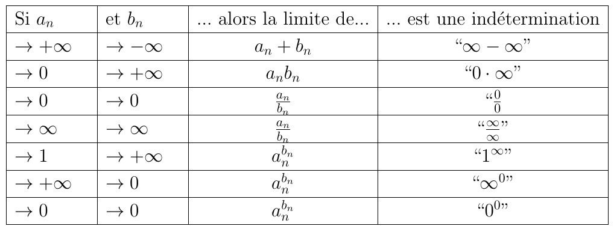
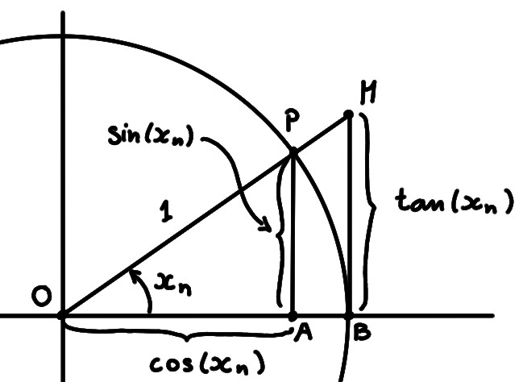

La plupart des limites intéressantes que nous rencontrerons
dans ce cours sont des limites qui ne se calculent pas simplement à l'aide des
propriétés simples de la limite. En fait, les limites importantes
nécessiteront toutes une étude plus approfondie.
Ces limites feront toutes intervenir ce qu'on
appelle une indétermination.
Un limite est indéterminée lorsqu'elle fait intervenir une combinaison de
grandeurs qui ne rentre dans le cadre d'aucune règle simple, et
dont on ne peut pas immédiatement déterminer le comportement.
Listons quelques-uns des principaux cas d'indétermination:

Il se trouve que toutes ces indéterminations sont équivalentes (voir plus bas).
Nous ne traiterons pas les indéterminations de façon générale puisque justement,
leur présence indique qu'une étude au cas par cas est nécessaire. Nous allons
donc discuter certaines de ces indéterminations, et présenter les techniques qui
permettent de les résoudre, en étudiant des exemples.
Plusieurs de ces techniques seront utilisées plus tard,
aussi dans l'étude de limites de types différents (comme \(x\to x_0\)).
Indéterminations du type ''\(\frac{\infty}{\infty}\)''
Lorsqu'on est en présence d'un quotient \(\frac{a_n}{b_n}\) dans lequel \(a_n\)
et \(b_n\) sont les deux grands, on essaiera d'extraire ce qui est à
l'origine de cette grandeur,
en mettant un terme dominant en évidence. On pourra alors
simplifier la fraction \(\frac{a_n}{b_n}\), et faire disparaître
l'indétermination.
Considérons
\[\lim_{n\to \infty}\frac{3n^3-17n+1}{5n^3+\sin(n)}\,,\]
qui est effectivement une indétermination de la forme
''\(\frac{\infty}{\infty}\)'',
puisque \(a_n=3n^3-17n+1\to +\infty\)
(polynôme de degré \(3\), dont le coefficient principal est \(3\gt 0\)) et
\(b_n=5n^3+\sin(n)\to +\infty\) (\(5n^3\to \infty\) et \(\sin(n)\) est bornée).
Ce que l'on peut faire ici est extraire les termes dominants dans \(a_n\)
et \(b_n\), qui sont les termes contenant la puissance \(n^3\):
\[
\frac{a_n}{b_n}=
\frac{3n^3-17n+1}{5n^3+\sin(n)}
=
\frac{n^3(3-\frac{17}{n^2}+\frac{1}{n^3})}{n^3(5+\frac{\sin(n)}{n^3})}
=
\frac{3-\frac{17}{n^2}+\frac{1}{n^3}}{5+\frac{\sin(n)}{n^3}}
=\frac{a_n'}{b_n'}
\]
En simplifiant par \(n^3\) on a obtenu un quotient \(\frac{a_n'}{b_n'}\),
qui dans la limite \(n\to \infty\)
n'est plus indéterminé. En effet, \(a_n'\to 3\) et \(b_n'\to 5\), et donc
\[
\lim_{n\to \infty}\frac{a_n}{b_n}
=
\lim_{n\to \infty}\frac{a_n'}{b_n'}
=\frac{3}{5}\,.
\]
Considérons
\[ \lim_{n\to \infty} \bigl(n^3-5n^2\bigr)\,,
\]
dans laquelle \(a_n=n^3\to +\infty\) et
\(b_n=5n^2\to \infty\). Comme \(a_n\) tend vers
l'infini plus vite que \(b_n\), dû au fait qu'il contient un terme de degré
\(3>2\), on a avantage à
mettre \(n^3\) en évidence et obtenir un produit,
\[
a_n-b_n=n^3-5n^2=n^3\Bigl(1-\frac{5}{n}\Bigr)=a_n'b_n'
\]
Maintenant, on a toujours \(a_n'=n^3\to \infty\), mais
puisque \(b_n'=1-\frac{5}{n}\to 1\), on a en particulier
\(b_n'\geqslant \frac12\gt 0\) pour tout \(n\) suffisamment grand. On a donc
\[\lim_{n\to \infty} a_nb_n=\lim_{n\to \infty} a_n'b_n'=+\infty\,.\]
L'identité élémentaire
\[
(a-b)(a+b)=
a^2-b^2
\]
peut être utilisée souvent lorsqu'on a affaire à une différence \(a-b\).
Par exemple, en étudiant des différences de racines \(a-b=\sqrt{A}-\sqrt{B}\),
on pourra multiplier et diviser par le conjugué \(\sqrt{A}+\sqrt{B}\):
\[
\sqrt{A}-\sqrt{B}
=
(\sqrt{A}-\sqrt{B})\frac{\sqrt{A}+\sqrt{B}}{\sqrt{A}+\sqrt{B}}
=\frac{A-B}{\sqrt{A}+\sqrt{B}}
\]
Considérons
\[
\lim_{n\to \infty} \bigl\{\sqrt{n+1}-\sqrt{n}\bigr\}\,,
\]
qui est bien du type ''\(\infty-\infty\)''.
En multipliant et divisant par le conjugué,
\[\begin{aligned}
\sqrt{n+1}-\sqrt{n}&=
\bigl(\sqrt{n+1}-\sqrt{n}\bigr)
\frac{\sqrt{n+1}+\sqrt{n}}{\sqrt{n+1}+\sqrt{n}}\\
&=\frac{(n+1)-n}{\sqrt{n+1}+\sqrt{n}}\\
&=\frac{1}{\sqrt{n+1}+\sqrt{n}}\,.
\end{aligned}\]
Ce quotient n'est plus indéterminé:
\[
\lim_{n\to \infty} \bigl\{\sqrt{n+1}-\sqrt{n}\bigr\}=
\lim_{n\to \infty} \frac{1}{\sqrt{n+1}+\sqrt{n}}=0\,.
\]
Indéterminations du type ''\(\frac00\)''
Nous reviendrons au indéterminations ''\(\frac00\)'', puisqu'elles sont au coeur
du problème de la dérivation, un outil central de l'analyse.
Pour l'instant, donnons déjà une limite classique:
Soit \((x_n)\) est une suite représentant la mesure d'angles en radians,
telle que \(x_n\neq 0\) pour tout \(n\), et \(x_n\to
0\). Alors
\[
\lim_{n\to \infty}\frac{\sin(x_n)}{x_n}=1\,.
\]
Attention, il est important de mentionner que le sinus, dans \(\sin(x_n)\), est
calculé en supposant que l'angle \(x_n\) est mesuré en radians. Sinon, la
limite n'est pas la même!
Dans la preuve, on utilisera l'expression qui donne l'aire \(A\) d'un secteur
circulaire de rayon \(r\), dont l'ouverture est un angle de \(\theta\) radians:
Comme la fonction \(x\mapsto \frac{\sin(x)}{x}\) est paire, on peut supposer que
\(x_n>0\) pour tout \(n\).
Puisque \(x_n\to 0\), on a \(0\lt x_n\lt \frac{\pi}{2}\) pour tout \(n\)
suffisamment grand.
Considérons donc un angle sur le cercle trigonométrique, dont la mesure en
radians \(x_n\) est entre \(0\) et \(\tfrac{\pi}{2}\):

Remarquons que le triangle \(OAP\) est inclus dans le secteur circulaire
\(OBP\), qui est lui-même inclus dans le triangle \(OBM\). On a donc
\[
\text{aire}(\triangle\,OAP)\leqslant
\text{aire}(\text{secteur }OBP)\leqslant
\text{aire}(\triangle\,OBM)\,.
\]
En exprimant chacune de ces aires en fonction de \(x_n\),
\[\tfrac12 \cos (x_n)\sin(x_n)\leqslant \tfrac12 x_n 1^2\leqslant \tfrac12\tan (x_n)\,.\]
Ce deux inégalités sont équivalentes à
\[\underbrace{\cos (x_n)}_{a_n}
\leqslant \frac{\sin (x_n)}{x_n}\leqslant \underbrace{\frac{1}{\cos(x_n)}}_{b_n}\,.\]
Puisque \(x_n\to 0\), on a \(a_n=\cos(x_n)\to 1\) et \(b_n\to \frac{1}{1}=1\).
On conclut donc avec le théorème des deux gendarmes.
Sur l'équivalence entre les indéterminations
Toutes les indéterminations du tableau présenté plus haut sont équivalentes,
dans le sens où on peut toujours transformer une indétermination en une
autre. Voyons les principaux cas.
Supposons par exemple que la limite de \(\frac{a_n}{b_n}\) soit
''\(\frac{\infty}{\infty}\)''.
Cela implique que \(\frac{1}{b_n}\to 0\), et donc en
écrivant \(\frac{a_n}{b_n}=a_n\cdot
\frac{1}{b_n}\), la limite
devient du type ''\(\infty\cdot 0\)''.
Supposons ensuite que la limite de \(\frac{a_n}{b_n}\) soit
''\(\frac{\infty}{\infty}\)''. En écrivant
\[
\frac{a_n}{b_n}
=\exp\Bigl(\ln\frac{a_n}{b_n}\Bigr)
=\exp\bigl(\ln(a_n)-\ln(b_n)\bigr)\,,
\]
on voit que l'on fait apparaître \(\ln(a_n)-\ln(b_n)\), qui dans la limite est
du type ''\(\infty-\infty\)''.
Soit finalement \(a_n^{b_n}\) une suite qui dans la limite \(n\to \infty\) est
du type ''\(1^\infty\)''.
En écrivant \(a_n^{b_n}=\exp(b_n\ln(a_n))\), comme \(a_n\to 1\) implique
\(\ln(a_n)\to 0\), \(b_n\ln(a_n)\) est du type
''\(\infty\cdot 0\)''.
Parmi les formes suivantes, indiquer celles qui sont indéterminées.
[ ] ''\(\infty+\infty\)''
[ ] ''\(\infty-\infty\)''
[ ] ''\(\infty-2\infty\)''
[ ] ''\(\frac{\infty}{0}\)''
[ ] ''\(\frac{0}{0}\)''
[ ] ''\(\frac{1}{0}\)''
[ ] ''\(\frac{0}{\infty}\)''
[ ] ''\(1^\infty\)''
[ ] ''\(1^{-\infty}\)''
[ ] ''\(\infty^\infty\)''
[ ] ''\(0^\infty\)''
[ ] ''\(0^0\)''
[ ] ''\(\infty^0\)''
[ ] ''\(\infty^\infty\)''
[ ] ''\(\infty^{-\infty}\)''
[ ] ''\(\infty\cdot\infty\)''
[ ] ''\(\frac{-\infty}{\infty}\)''
[ ] ''\(\frac{1}{\infty}\)''
[ ] ''\(\frac{0^\infty}{0^\infty}\)''
Vrai ou faux?
[ ] Si \(a_n-b_n\to +\infty\), alors
\(\sqrt{a_n-b_n}\to +\infty\).
[ ] Si \(a_n-b_n\to +\infty\), alors
\(\sqrt{a_n}-\sqrt{b_n}\to +\infty\).
[ ] Si \(\frac{a_n}{b_n}\to \infty\) et si \(\frac{c_n}{b_n}\to 1\), alors
\(\frac{a_n}{c_n}\to \infty\).